class: center, middle # EE-464 STATIC POWER CONVERSION-II # 3-Ph & Multi Level Inverters ## Ozan Keysan ## [keysan.me](http://keysan.me) ### Office: C-113 <span class="meta">•</span> Tel: 210 7586 --- # Switch Utilization in 3-Ph Inverters -- ## Assuming pure sine output (i.e. large enough inductance) -- ## Transistor voltage and currents -- ## \\(V\_T = V\_{d,max}\\) -- ## \\(I\_T = \sqrt{2} I\_{o,max}\\) --- # Switch Utilization in 3-Ph Inverters -- ## Output Power -- ## \\(S\_{3-ph} = \sqrt{3} V\_{l-l} I\_{o,max}\\) -- ## There are 6 switches, so: -- ### Switch Utilization= -- \\(= \dfrac{\sqrt{3} V\_{l-l} I\_{o,max}}{6 V\_{d,max} \sqrt{2} I\_{o,max}}\\) --- # Switch Utilization in 3-Ph Inverters -- ## Linear Mode -- ## \\(= \dfrac{1}{2 \sqrt{6}} \dfrac{\sqrt{3}}{2 \sqrt{2}} m_a\\) -- \\(= \dfrac{1}{8} m_a\\) -- ## Same utilization factor, in other words 3-ph inverters use 50% more switch to deliver 50% more power! --- # Effect of Blanking (Dead) Time 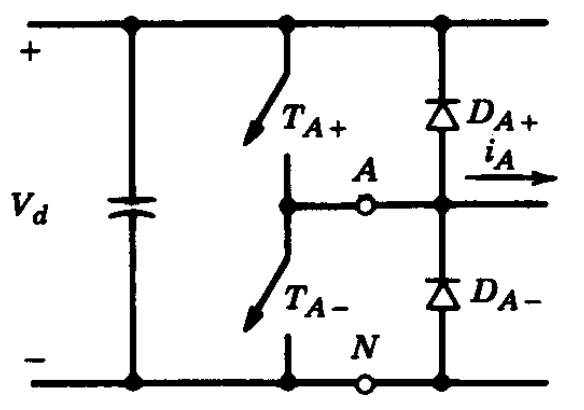 ### There has to be off time between swithcing instants to present short circuit of Vd (can be up to \\(2-3 \mu s\\)) --- # Effect of Blanking (Dead) Time 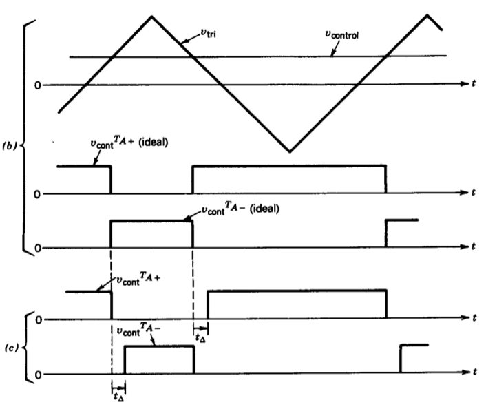 --- # Effect of Blanking (Dead) Time 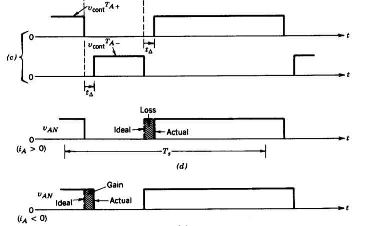 ## Results in non-linearity in the voltage output ### [Reading assignment for curious students](https://www.dropbox.com/s/n9pbycyotc7s5o0/19-TIE-4452_R2.pdf?dl=0) --- # Effect of Blanking (Dead) Time -- ## \\( | \Delta V\_o | = \dfrac{2 t\_{\Delta}}{T\_s} V\_d\\) ### Always reduce the output voltage magnitude wrt. current direction --- # Effect of Blanking (Dead) Time 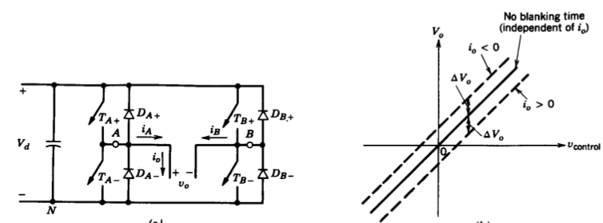 ### Voltage jump when the current reverses. --- # Effect of Blanking (Dead) Time 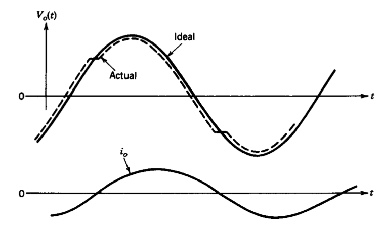 --- # Multi-Level Inverters -- - ### Used commonly in high power (MW, kV) converters -- - ### Increases output voltage capacity -- - ### Minimizes THD even with low switching frequencies -- - ### Reduce EMI due to lower voltage steps --- # Two-Level Inverter Waveform -- 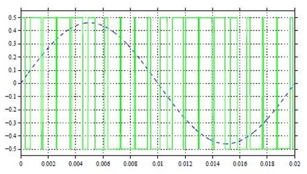 --- # Multi-Level Inverter Waveforms -- 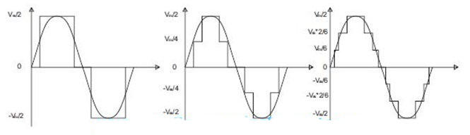 ### Three level, ### Five Level, ### and Seven Level Inverter Waveforms --- # H-Bridge Inverters -- 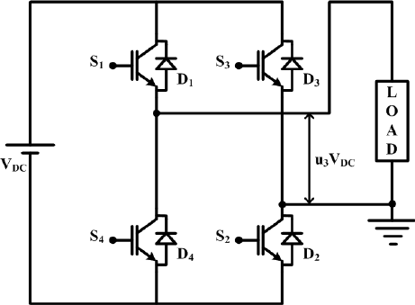 --- # H-Bridge Inverters -- ### Three Level (unipolar) PWM Output -- <img src="./images/ee464/h_bridge_3level2.png" alt="Drawing" style="width: 800px;"> --- ## H-Bridges can be connected in series for higher voltages -- 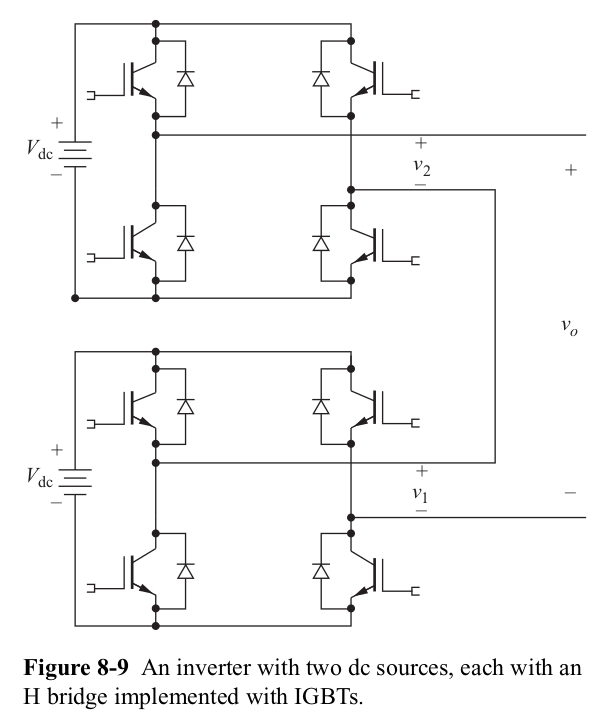 --- ## What are the voltage levels? -- : 2Vdc, Vdc, 0, -Vdc, -2Vdc -- 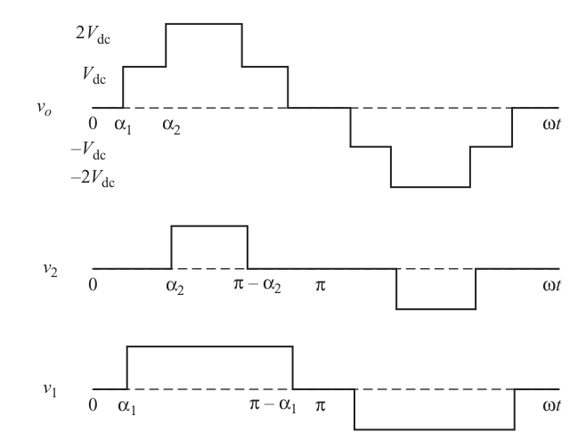 -- ### Specific harmonics can be elimination by proper \\(\alpha\_1, \alpha\_2\\) --- # Five-Series Cascaded H-Bridge Inverters -- ### How many voltage levels? 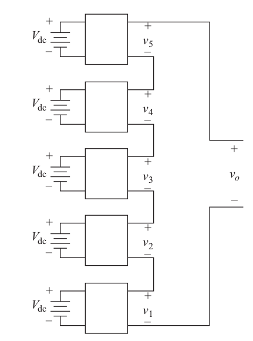 --- # 11-Level Cascaded H-Bridge Inverters -- 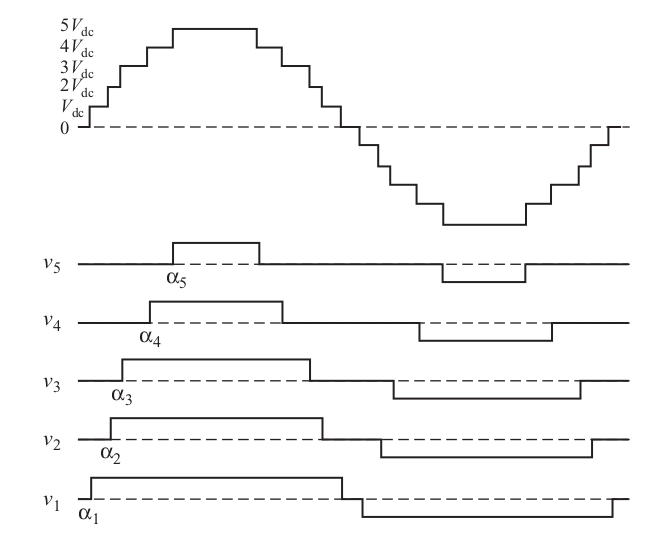 --- ## 11-Level Cascaded with Five Separate Sources -- 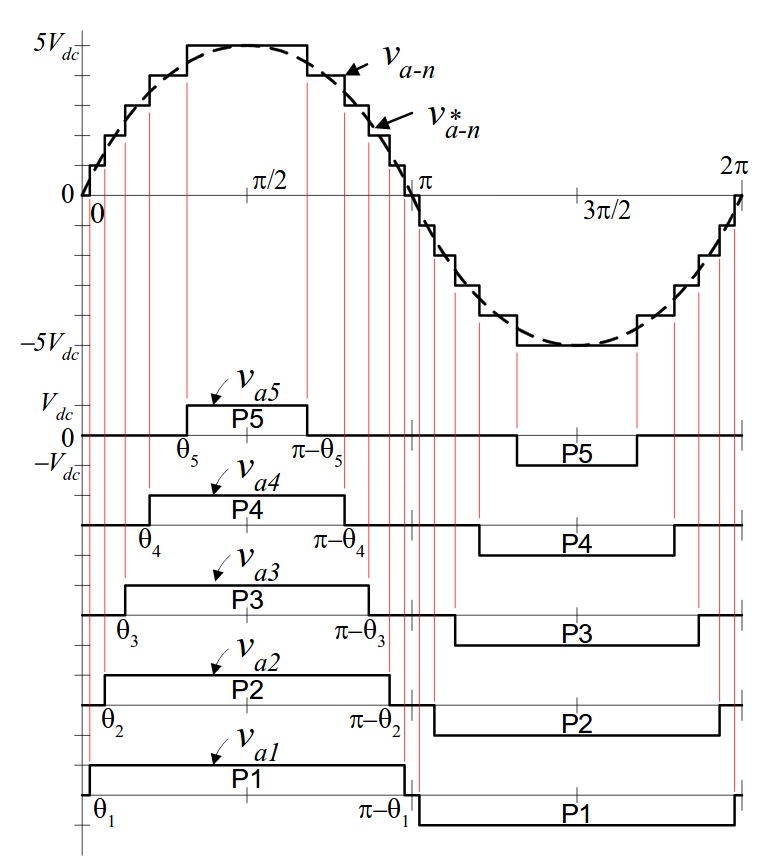 --- ## Alternate PWM Techniques <img src="./images/ee464/h_bridge_nlevel2.png" alt="Drawing" style="width: 800px;"> --- # N-Level Cascaded H-Bridge Inverters -- ## Five-level Output Voltage Waveform (fc=3kHz) 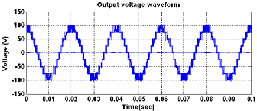 --- # Multi-level SVPWM -- 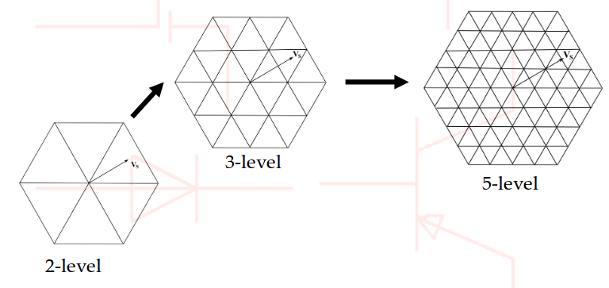 --- # Multi-level SVPWM ## 3-Level 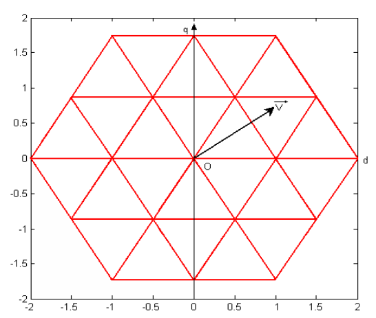 --- # Multi-level SVPWM ## 5-Level 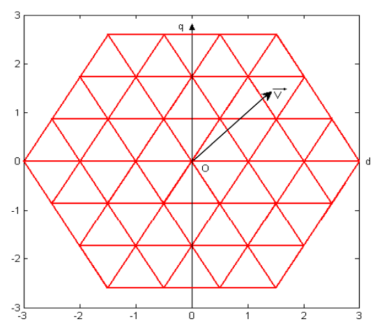 --- # Multi-level SVPWM ## Voltage Vectors of a 6-Level Inverter 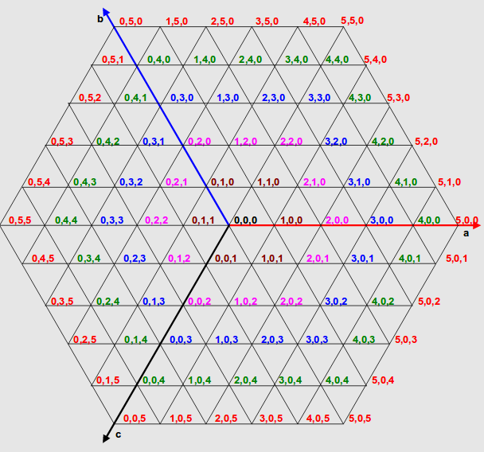 --- # Diode Clamped Multi-level Inverters -- 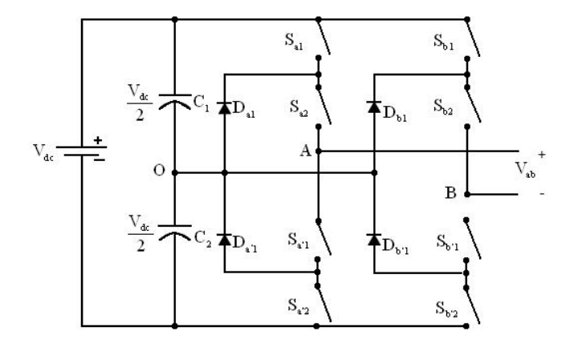 ### Five-level diode clamped inverter (Neutral Point Clamped (NPC)) --- ## Five-level diode clamped inverter ## Voltage Levels: Vdc -- 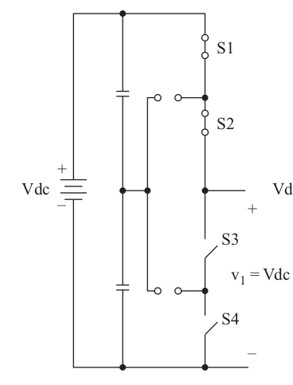 --- ## Five voltage-level diode clamped inverter ## Voltage Levels: 0 -- 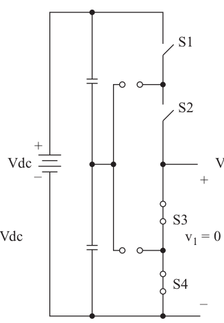 --- ## Five voltage-level diode clamped inverter ## Voltage Levels: Vdc/2 -- 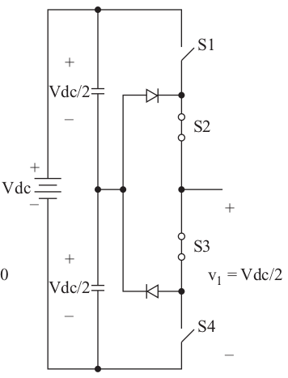 --- ## Even Higher Voltage Levels -- ### 3 voltage sources cascaded 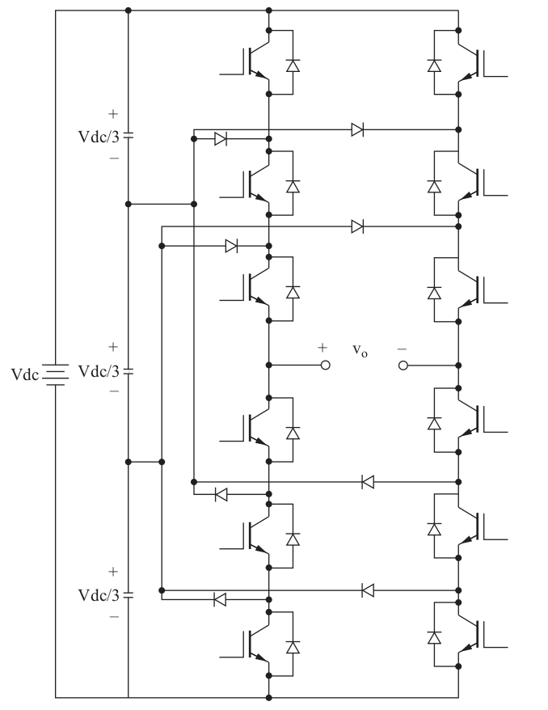 --- ## Even Higher Voltage Levels -- ### 5-Photovoltaic panels connected in series -- 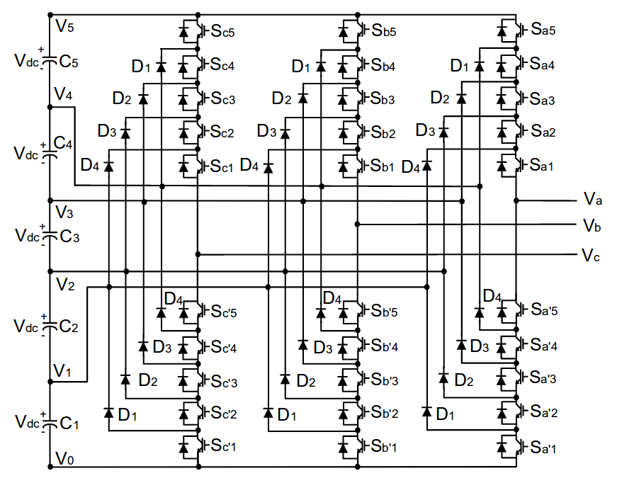 --- ## Even Higher Voltage Levels ## Switching States: Can you find the pattern? -- 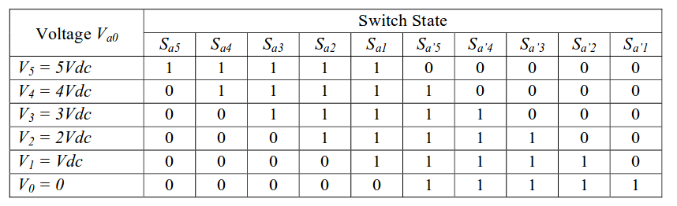 ### A set of five switches is on at any time --- ## Even Higher Voltage Levels ## Line-to-line voltage -- 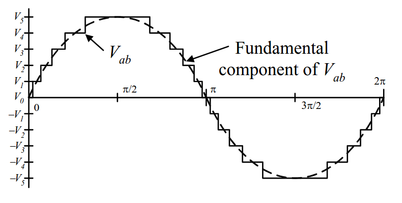 --- # Further Reading - ### [Multilevel Inverter – Types & Advantages](https://www.elprocus.com/multilevel-inverter-types-advantages/) - ### [Introduction to MultiLevel Inverters](http://www.nitc.ac.in/electrical/ipg/pegcres/presentations/3%20Dr.%20Rijil%20Ramachand/01_Introduction%20to%20Multilevel%20Inverters.pdf) - ### [Multilevel Inverters](http://shodhganga.inflibnet.ac.in/bitstream/10603/16448/7/07_chapter%202.pdf) - ### [Multilevel Inverters: A Survey of Topologies, Controls, and Applications](https://ieeexplore.ieee.org/stamp/stamp.jsp?arnumber=1021296) - ### [Multilevel Power Converters ](https://pdfs.semanticscholar.org/049a/a38514290aa78070abe1cd03a8b4a66edd73.pdf) --- ## You can download this presentation from: [keysan.me/ee464](http://keysan.me/ee464)